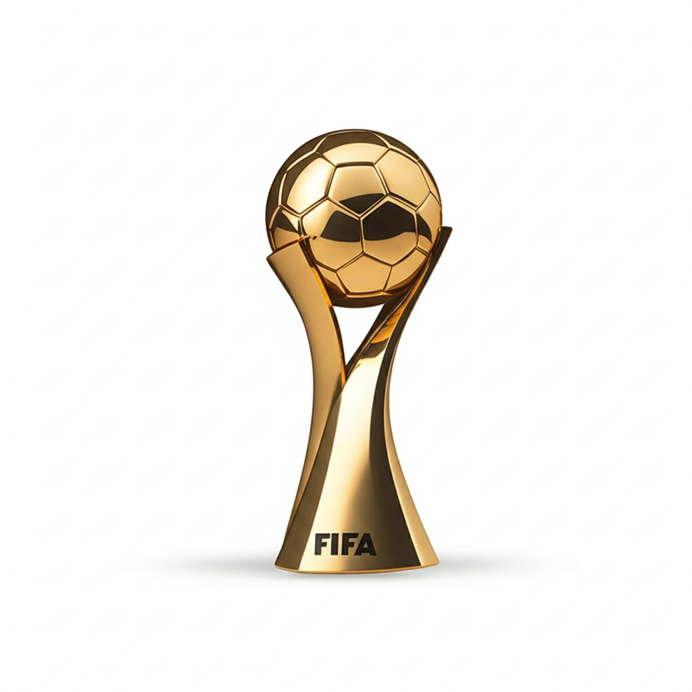
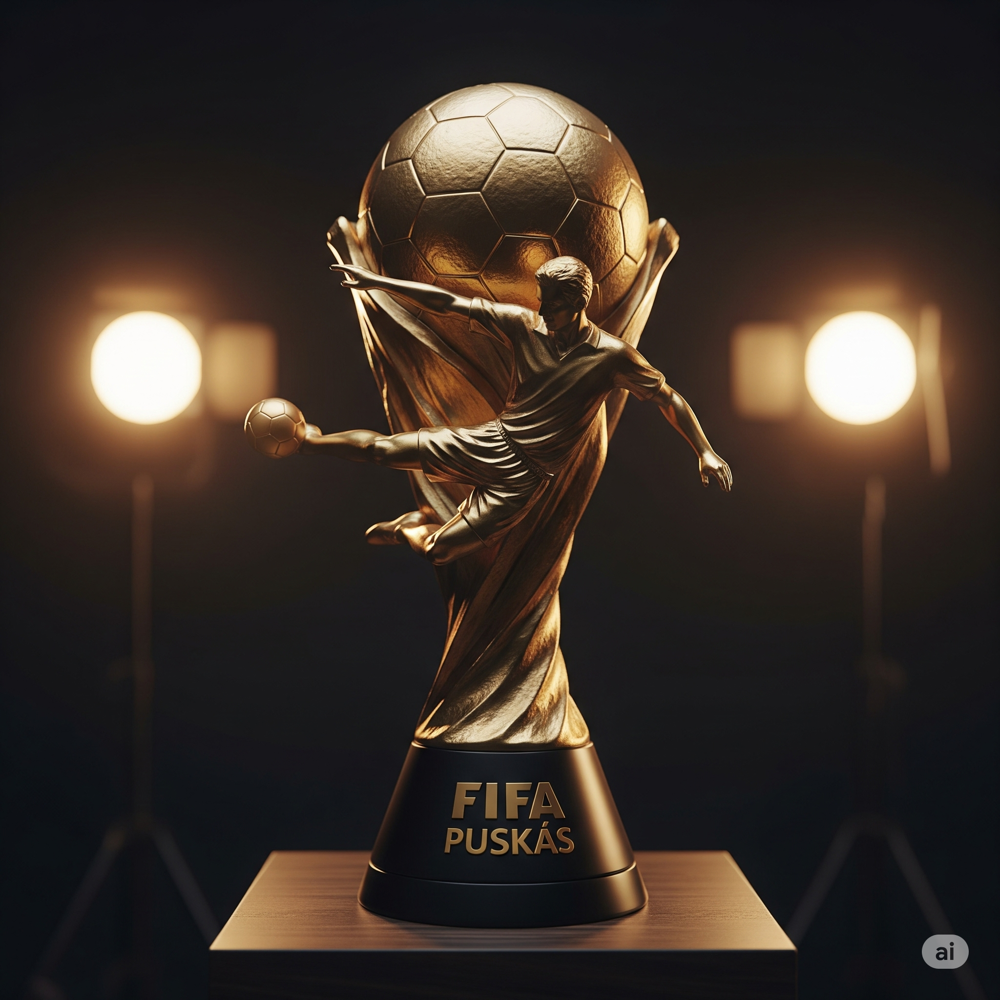

FOOTBALL AWARDS
Individual Awards
- FIFA World Player of the Year:  Awarded to the best
- Ballon d'Or:
 Given annually to the best male footballer, judged by journalists.
Given annually to the best male footballer, judged by journalists.
- Golden Boot:
 Awarded to the top goal-scorer of a tournament or league.
Awarded to the top goal-scorer of a tournament or league.
- FIFA Puskás Award: Recognizes the most aesthetically significant goal of the year.
Team Awards
- FIFA World Cup: The most prestigious tournament, held every 4 years.
- UEFA Champions League: The top European club competition.
- CONMEBOL Copa Libertadores: South America's premier club competition.
Special Recognitions
- Puskás Award: Best goal of the year.
- Golden Glove: Best goalkeeper in a competition.